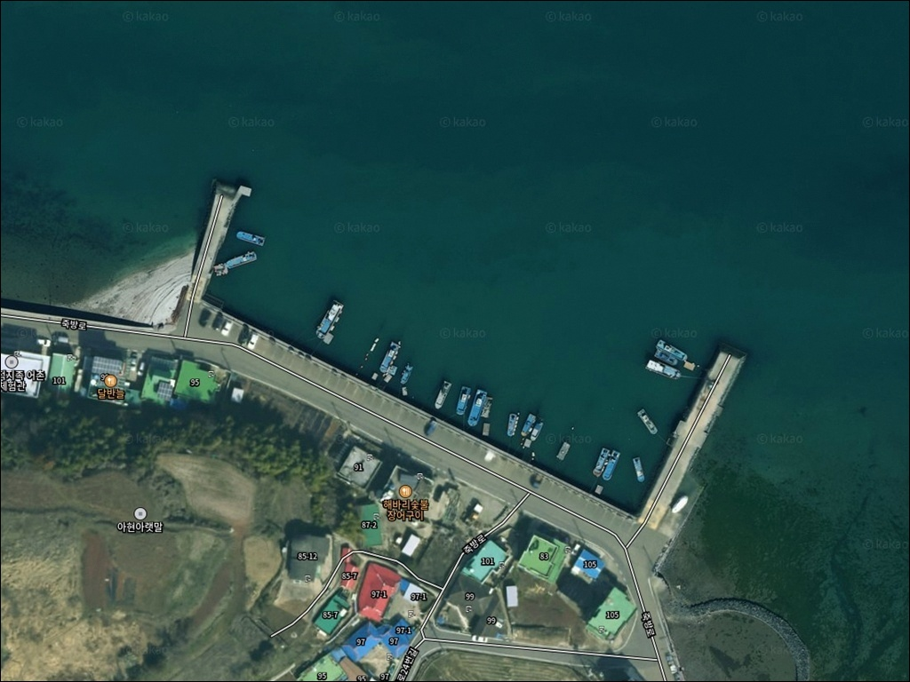
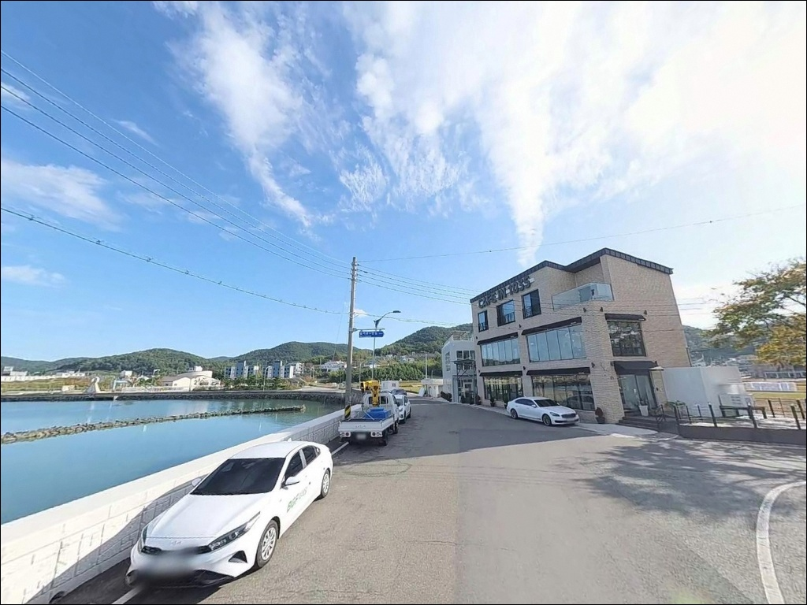
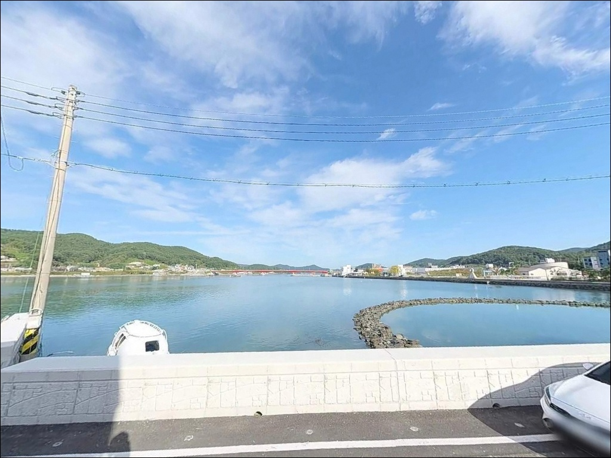
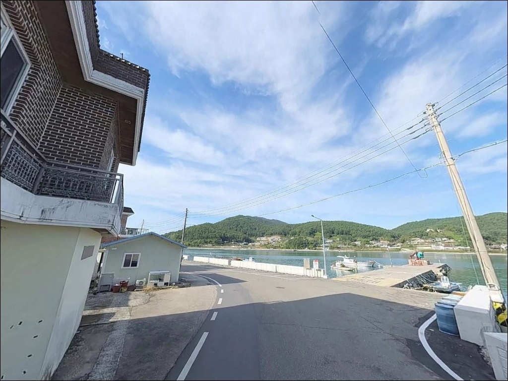
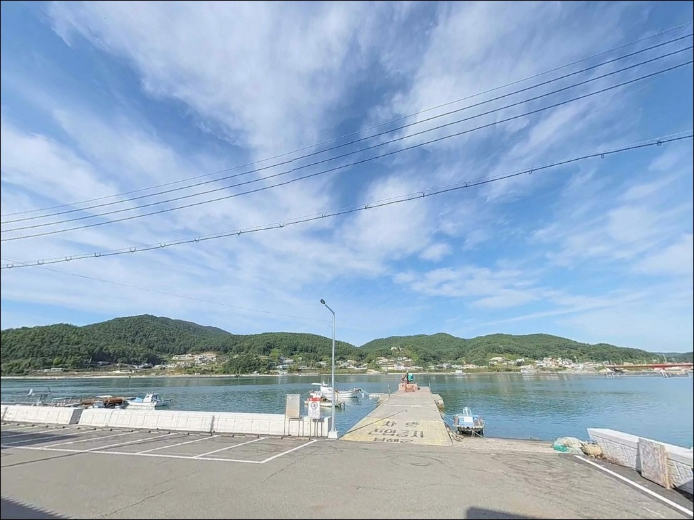
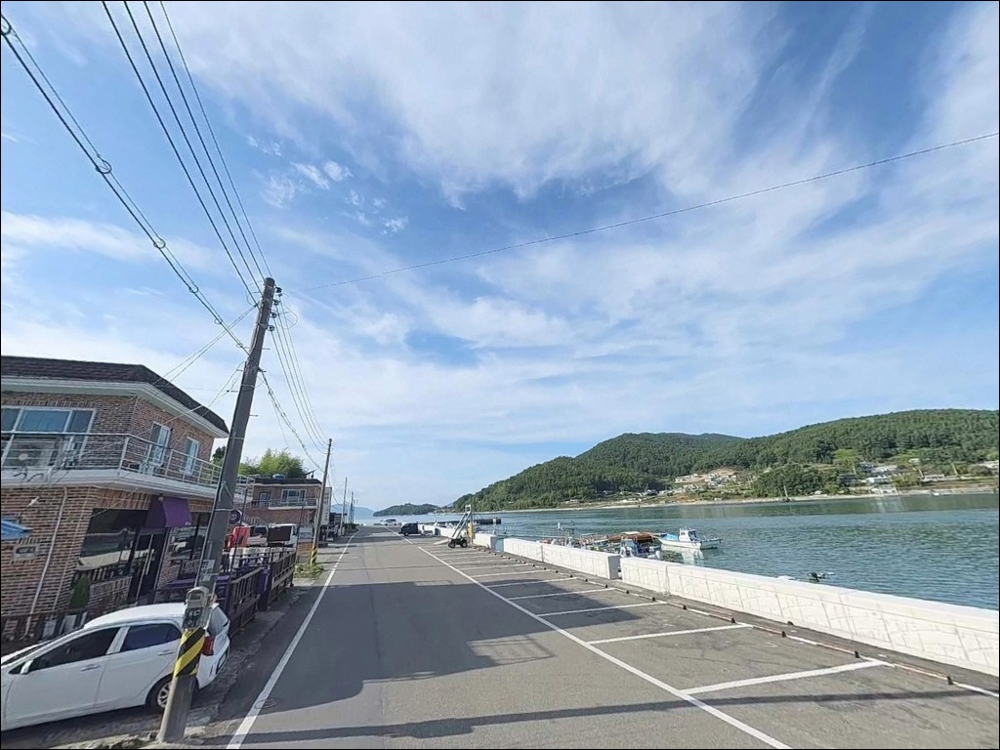
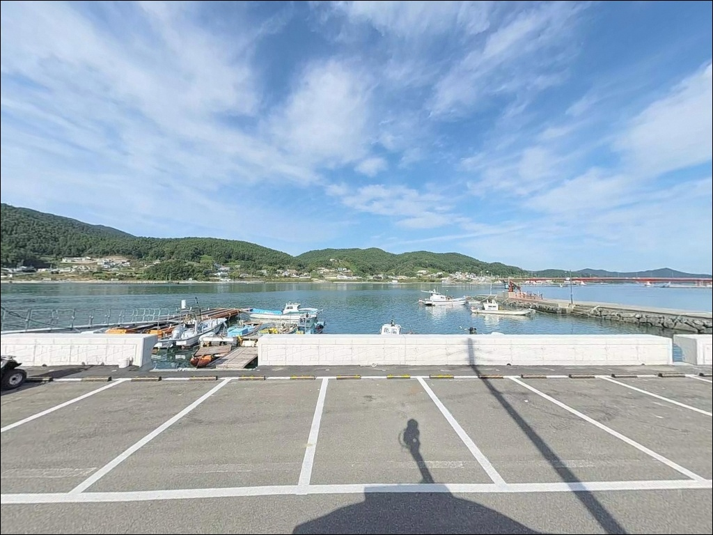
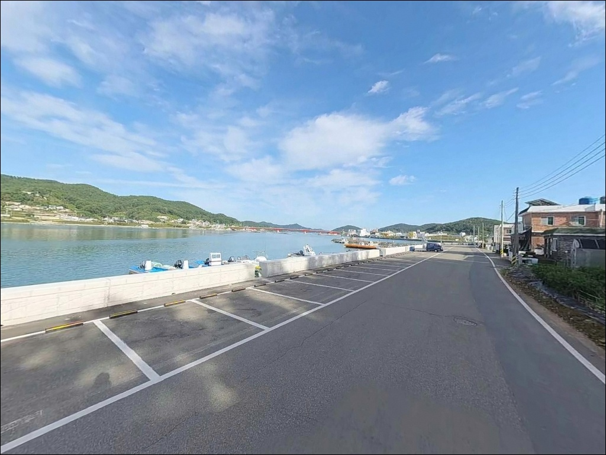
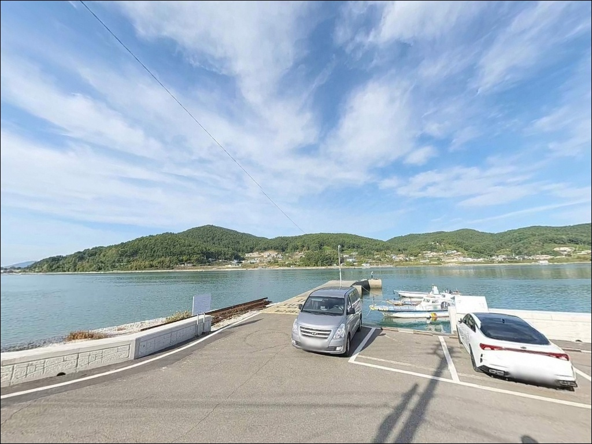

사리 전후 채비 버티기 힘든 남해 지족해협, 와현방파제 진입 물때
이 페이지에는 광고(제휴 링크 포함)가 있으며, 광고 링크를 통해 구매하면 운영자가 판매 수익 또는 수수료를 받을 수 있습니다. 포인트 사진: 카카오맵 스카이뷰·로드뷰. 이 페이지의 지도·사진 이미지는 카카오맵의 실제 서비스 이미지와 다를 수 있습니다.


포인트 안내
와현방파제
경남 남해군 삼동면 지족리 1036-7
지족해협은 남해도와 창선도 사이의 협수로로,
조류 속도가 시속 13~15km에 달하는 구간입니다.
사리 전후에 와현방파제 끝단에 자리를 잡으면
어떤 채비도 흐름을 버티기 어려운 수준이 됩니다.
물때 선택이 조과의 전부를 결정하는 구조입니다.
와현방파제는 지족리 와현마을 앞 해안선에 놓인
50m 안팎의 소형 방파제입니다.
웹 검색으로는 자료가 많지 않은 곳이지만,
지족해협이라는 특별한 지형 조건이
이 방파제를 주목하게 만드는 이유입니다.
국가무형문화재 죽방렴 어업 현장이
바로 앞 수면에 펼쳐지는 포인트이기도 합니다.
이 글은 와현방파제의
진입 동선, 물때 판단 기준, 차박 여건,
낚시 스타일별 공략 조건에 집중합니다.
조황 단정이나 특정 어종 보장은
이 글의 범위에 포함되지 않습니다.

1. 진입 동선과 포인트 접근성
삼동면 소재지에서 해안길을 따라 진입하며
전 구간 포장도로로 연결되어 있습니다.
국도 3호선에서 지족리 방면 지선 도로를 이용하면
마을 골목을 일부 통과하게 되는데,
승용차와 일반 SUV 기준으로 진입에 무리 없는 폭이
확보된 구간입니다.
다만 지족리 내부 해안도로 일부 구간에서
차량 교행이 어려운 1차선 구간이 나옵니다.
캠핑카나 대형 차량이라면
출발 전 위성지도로 진입로를 미리 확인하는 편이 좋습니다.
방파제 진입 후 회차 공간도 넉넉하지 않아
진입 전 차량 방향을 먼저 결정해 두는 것이 안전합니다.
주차는 와현방파제 주차장으로 안내되는 공간을 활용하며,
해안도로 직선 구간과 소규모 공터를 중심으로
노상 주차가 이뤄지는 구조입니다.
대형 차량보다는 승용·SUV 규모에
적합한 환경입니다.

2. 차박 환경과 야간 체류 여건
와현방파제는 마을 앞 해안선에 붙어 있는 포인트 특성상
완전한 독립형 차박지 성격은 아닙니다.
장박보다는 낚시 후 1박 대기형으로 활용하는 편이 현실적이며,
해안 석축을 따라 차량을 배치하면
지족 수로와 죽방렴을 조망하는 자리를 잡을 수 있습니다.
야간에는 창선대교·지족교 등 교량과
마을 가로등 영향으로
해안 일대가 비교적 밝게 유지됩니다.
방파제 끝단 방향으로는 가로등이 없으므로
헤드랜턴은 반드시 지참해야 하며,
마을과 인접한 위치라 야간 소음 매너가 기본입니다.
민가 밀집도가 낮지 않아 프라이버시 확보는 제한적입니다.
조용한 정적 휴식에는 나쁘지 않은 환경이지만,
장기 차박보다는 낚시 중심 출조를 기점으로 삼는
포인트로 이해하는 것이 맞습니다.


3. 주변 편의시설 및 인프라 현황
삼동면 소재지와 가까운 위치 덕분에
이 일대에서 드물게 편의시설 접근성이 좋은 포인트입니다.
삼동면사무소 인근에 편의점과 하나로마트가 있으며,
차량으로 3분 내외 거리에서 기본 물자를 해결할 수 있습니다.
지족리 해안 일대는 죽방렴 체험과
지족항 음식거리가 인접해 있어
식사 해결이 편리한 편입니다.
지족리 533-9의 태공낚시에서
낚시 미끼와 소모품을 현지 조달할 수 있습니다.
지족항 방면으로 도보 이동하면
공중화장실 이용도 가능합니다.

4. 물때가 조과를 결정하는 이유
와현방파제를 방문하기 전에
가장 먼저 확인할 것은 물때입니다.
지족해협은 조류 속도가 시속 13~15km에 달하는 협수로로,
사리 전후에는 채비 운영 자체가 불가능해질 만큼
물살이 강해집니다.
바다타임에서 삼동면 기준 물때를 확인한 뒤
조금 전후 타이밍에 맞춰 출발 시각을 조정하는 것이
이 포인트의 기본 전략입니다.
간조 시에는 수위가 낮아져
발판 상태가 달라지는 구간도 생깁니다.
만조 예보 시각을 미리 파악하고 출조해야
발판 환경 변화에 대응할 수 있습니다.
기상청 해상 예보는 당일 아침 재확인하는 것이 기본입니다.
어선이 드나드는 마을 선착장 구조이므로
어선 이동 동선과 어구를 방해하지 않는 자리 선택이
현장 매너의 기본입니다.
구명조끼는 조류 강도와 무관하게
상시 착용이 원칙입니다.

5. 지형 기반 낚시 여건 분석
와현방파제의 핵심은 지족해협 물골과의 연결 구조입니다.
방파제 외항 쪽은 해협 본류를 향해 열려 있어
조류의 직접 영향을 받으며,
끝단에서 외항 방향으로 수심이 빠르게 깊어집니다.
방파제 끝부분과 모서리 자리가 핵심 포인트 역할을 합니다.
바닥은 모래와 잡석이 혼합된 형태이며
군데군데 수중여가 발달해 있습니다.
방파제 길이가 50m 안팎으로 짧아
자리 수가 제한적인 편입니다.
이른 시간 입장이 자리 경쟁에서 유리하며,
가을부터 초겨울 사이 회유 어종의 활동이
이 해역에서 활발해지는 패턴입니다.
내항 쪽은 소형 어선 계류 구간으로
수심이 3~5m 수준의 비교적 안정적인 구조입니다.
조류 영향이 외항보다 약하게 유지되어
가벼운 채비 운영에 무리가 없는 구간입니다.
출조 전에 남해 삼동면 일대 조황 검색을 먼저 해보시길 권합니다.


6. 지족해협 조류에 맞는 낚시 스타일
이 포인트의 지형과 가장 잘 맞는 낚시는 찌낚시입니다.
지족해협의 조류를 채비에 태워 흘리는 방식이
물골 구조와 자연스럽게 어울립니다.
조금 전후 물때에 조황이 살아나는 패턴을 보이며,
방파제 끝단에서 해협 방향으로 채비를 내리면서
수심대를 단계적으로 탐색하는 전략이 유효합니다.
원투낚시도 이 포인트에서 운영 가능한 스타일입니다.
단, 강한 조류에 채비가 쓸리지 않도록
30g 이상의 무거운 봉돌 채비가 필수입니다.
중들물 이후 시간대에 바닥 어종 공략을 노리는 방식으로,
간조보다 조류가 안정되는 타이밍에 집중하는 것이 효과적입니다.
에깅과 루어낚시는 가을 시즌에 노려볼 만합니다.
갑오징어와 무늬오징어가 지족해협 일대 해역에서
가을철 활동이 활발해지는 패턴이며,
내항 석축 연결부와 끝단 주변에서
소형 소프트루어로 볼락을 탐색하는 방식도
야간 시간대에 유효한 선택입니다.

7. 대안 포인트와 플랜 B 동선
와현방파제 조류가 너무 강하거나
자리 여건이 맞지 않는다면
아현방파제가 첫 번째 대안입니다.
지족해협 물골에 위치한 소형 방파제 군으로
에깅·원투·찌낚시를 고루 운영할 수 있으며,
와현방파제와 동일한 해협 패턴을 공유합니다.
지족방파제도 와현방파제와 가까운 거리에 있습니다.
길이 약 50m 규모로 지족해협 조류를 직격하는 구조라
해협형 공략 패턴이 비슷하게 적용됩니다.
두 포인트를 묶어 당일 탐색하는 동선이
이 권역에서 가장 효율적인 이동 방식입니다.
삼동면 물건리 방향으로 차로 10분 이내 거리에
대지포방파제가 있습니다.
150m급 방파제로 에깅·원투 중심 포인트이며,
차박 여건도 와현방파제보다
상대적으로 여유로운 편입니다.

지족해협 조류를 이해하면
와현방파제가 달라 보입니다
찌낚시나 에깅, 원투낚시를 즐기는 낚시인 중
해협형 조류 포인트를 탐색하고 싶은 분이라면
와현방파제의 지형 조건은
충분히 노려볼 만한 구조입니다.
웹에 자료가 많지 않은 만큼
직접 발품을 팔아야 하는 탐색형 포인트이며,
그만큼 자리 경쟁도 다른 유명 포인트보다
덜한 편입니다.
반면 물때 계산 없이 사리 전후에 진입하거나,
대형 차량을 진입로 확인 없이 몰고 오면
낚시 전부터 상황이 꼬일 수 있습니다.
물때 확인, 진입로 사전 점검, 봉돌 추가 준비.
이 세 가지를 갖추고 간다면
먼저 답사해 두길 잘했다 싶은 포인트가 될 수 있는 곳입니다.
죽방렴이 펼쳐진 지족 수로를 바라보며
조류 타이밍을 기다리는 낚시와
해안도로변에서 조용히 하룻밤 머무는 차박을
함께 계획하는 출조라면,
와현방파제는 기억에 남는 자리가 될 수 있습니다.